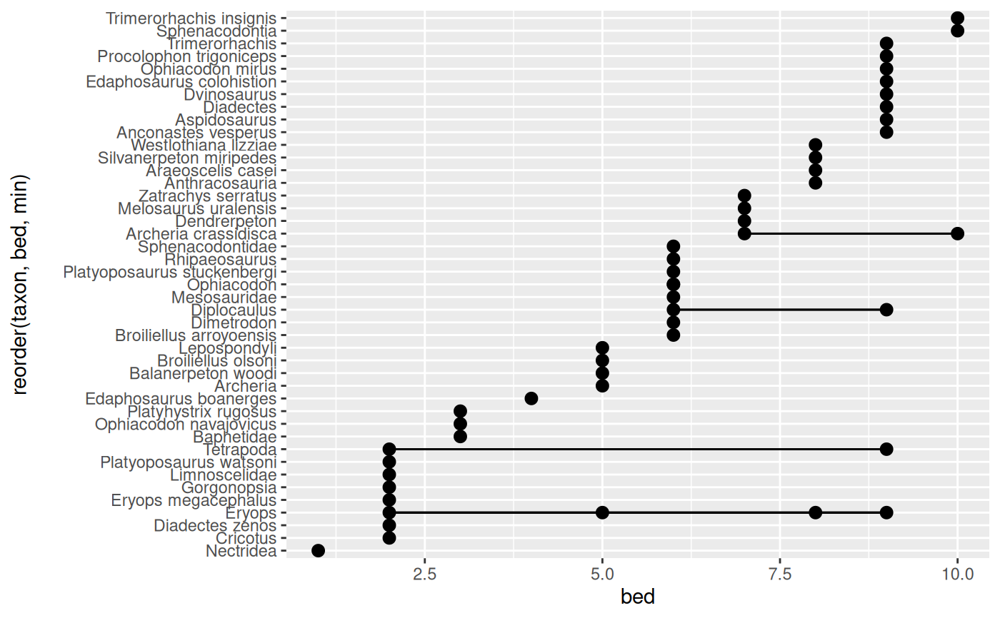

This geom is like ggplot2::geom_pointrange() in that it draws points and
lines. However, unlike ggplot2::geom_pointrange(), this geom takes in sets
of x-y points and calculates the ranges/intervals based on those. It then
plots both the original points and the ranges using
ggplot2::geom_linerange(). In cases where not all points are connected
(because of grouping due to aesthetics), the background_line argument can
be used to add lines that span the entire point range for each x or y
category.
Usage
geom_points_range(
mapping = NULL,
data = NULL,
stat = "points_range",
position = "identity",
...,
na.rm = FALSE,
orientation = NA,
background_line = NULL,
show.legend = NA,
inherit.aes = TRUE
)
stat_points_range(
mapping = NULL,
data = NULL,
geom = "points_range",
position = "identity",
...,
na.rm = FALSE,
orientation = NA,
show.legend = NA,
inherit.aes = TRUE
)Arguments
- mapping
Set of aesthetic mappings created by
aes(). If specified andinherit.aes = TRUE(the default), it is combined with the default mapping at the top level of the plot. You must supplymappingif there is no plot mapping.- data
The data to be displayed in this layer. There are three options:
If
NULL, the default, the data is inherited from the plot data as specified in the call toggplot().A
data.frame, or other object, will override the plot data. All objects will be fortified to produce a data frame. Seefortify()for which variables will be created.A
functionwill be called with a single argument, the plot data. The return value must be adata.frame, and will be used as the layer data. Afunctioncan be created from aformula(e.g.~ head(.x, 10)).- stat
The statistical transformation to use on the data for this layer. When using a
geom_*()function to construct a layer, thestatargument can be used the override the default coupling between geoms and stats. Thestatargument accepts the following:A
Statggproto subclass, for exampleStatCount.A string naming the stat. To give the stat as a string, strip the function name of the
stat_prefix. For example, to usestat_count(), give the stat as"count".
- position
A position adjustment to use on the data for this layer. This can be used in various ways, including to prevent overplotting and improving the display. The
positionargument accepts the following:The result of calling a position function, such as
position_jitter(). This method allows for passing extra arguments to the position.A string naming the position adjustment. To give the position as a string, strip the function name of the
position_prefix. For example, to useposition_jitter(), give the position as"jitter".
- ...
Arguments passed on to both
ggplot2::geom_linerange()andggplot2::geom_point().- na.rm
If
FALSE, the default, missing values are removed with a warning. IfTRUE, missing values are silently removed.- orientation
The orientation of the layer. The default (
NA) automatically determines the orientation from the aesthetic mapping. In the rare event that this fails it can be given explicitly by settingorientationto either"x"or"y". See the Orientation section for more detail.- background_line
A named list of aesthetic values to use for plotted line segments that span the entire
yorxrange for eachxorycategory. The default aesthetics will be used for any aesthetics that are not specified in the list. This can be useful if the plotted groups of points don't overlap but you want a continuous line connecting all points for a givenxorycategory. If NULL (the default), no line segments will be plotted.- show.legend
logical. Should this layer be included in the legends?
NA, the default, includes if any aesthetics are mapped.FALSEnever includes, andTRUEalways includes. It can also be a named logical vector to finely select the aesthetics to display. To include legend keys for all levels, even when no data exists, useTRUE. IfNA, all levels are shown in legend, but unobserved levels are omitted.- inherit.aes
If
FALSE, overrides the default aesthetics, rather than combining with them. This is most useful for helper functions that define both data and aesthetics and shouldn't inherit behaviour from the default plot specification, e.g.borders().- geom
The geometric object to use to display the data for this layer. When using a
stat_*()function to construct a layer, thegeomargument can be used to override the default coupling between stats and geoms. Thegeomargument accepts the following:A
Geomggproto subclass, for exampleGeomPoint.A string naming the geom. To give the geom as a string, strip the function name of the
geom_prefix. For example, to usegeom_point(), give the geom as"point".
Aesthetics
geom_points_range() understands the following
aesthetics (required aesthetics are in bold):
x
y
size
color/colour
fill
shape
alpha
group
linetype
linewidth
Computed variables
These are calculated by the 'stat' part of
layers and can be accessed with delayed evaluation.
stat_points_range() provides the following variables, some of which
depend on the orientation:
after_stat(ymin)orafter_stat(xmin)
the minimum extent of the point rangeafter_stat(ymax)orafter_stat(xmax)
the maximum extent of the point range
Orientation
This geom treats each axis differently and, thus, can thus have two orientations. Often the orientation is easy to deduce from a combination of the given mappings and the types of positional scales in use. Thus, ggplot2 will by default try to guess which orientation the layer should have. Under rare circumstances, the orientation is ambiguous and guessing may fail. In that case the orientation can be specified directly using the orientation parameter, which can be either "x" or "y". The value gives the axis that the geom should run along, "x" being the default orientation you would expect for the geom.
Examples
library(ggplot2)
library(palaeoverse)
data(tetrapods)
tetrapod_names <- tetrapods$accepted_name[1:50]
beds_sampled <- sample.int(n = 10, size = 50, replace = TRUE)
occdf <- data.frame(taxon = tetrapod_names, bed = beds_sampled)
ggplot(occdf, aes(y = reorder(taxon, bed, min), x = bed)) +
geom_points_range()
